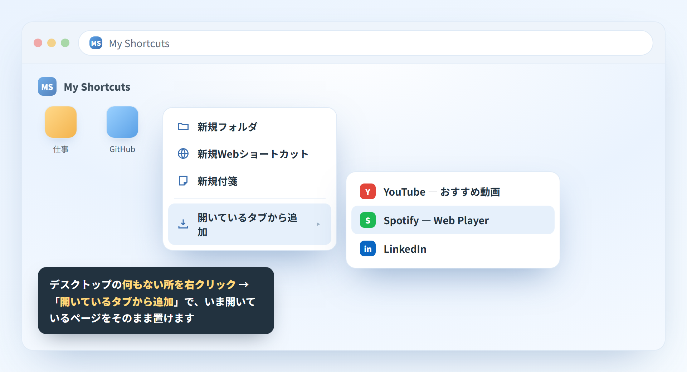
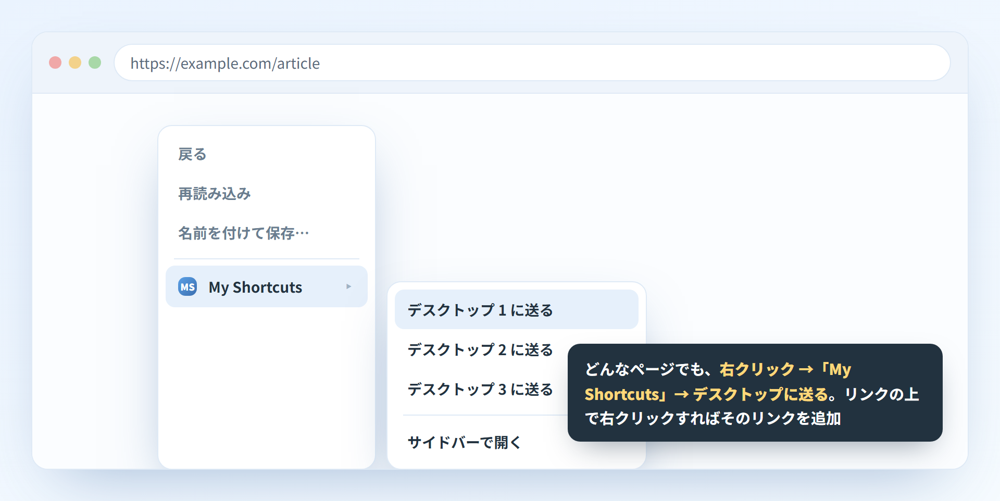
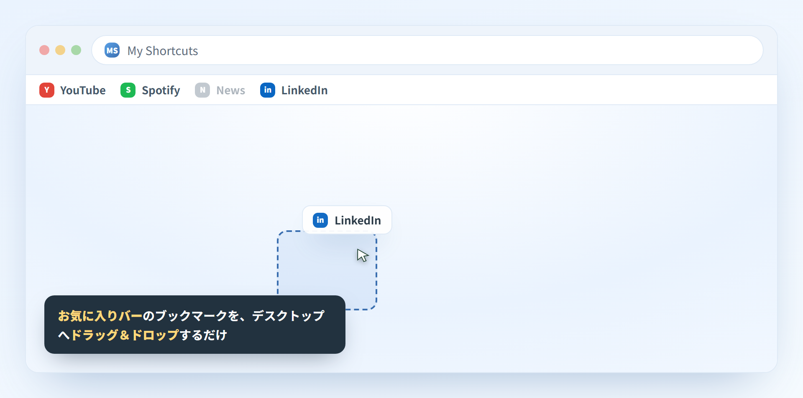
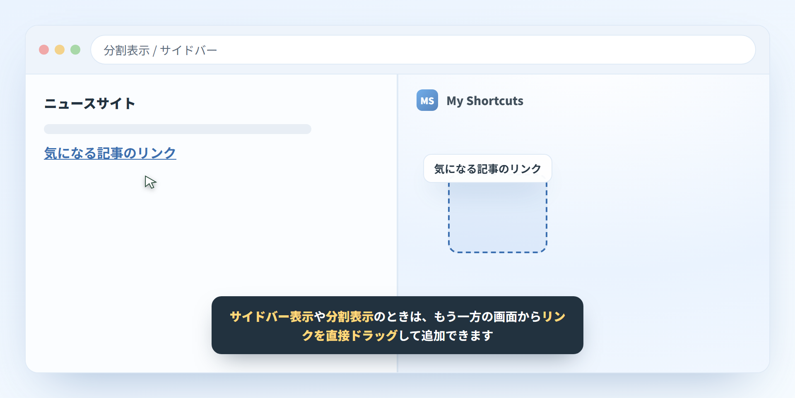
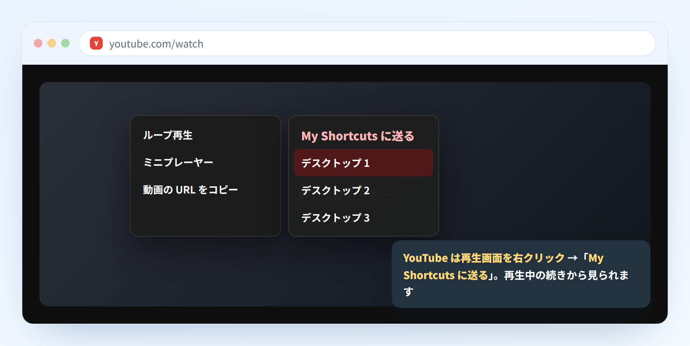
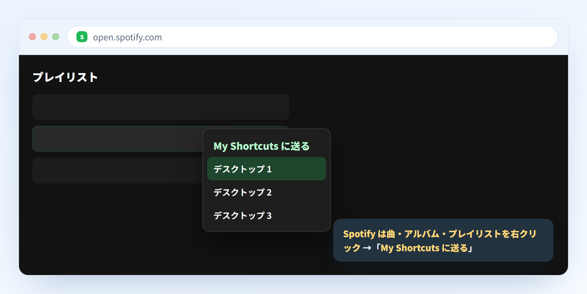
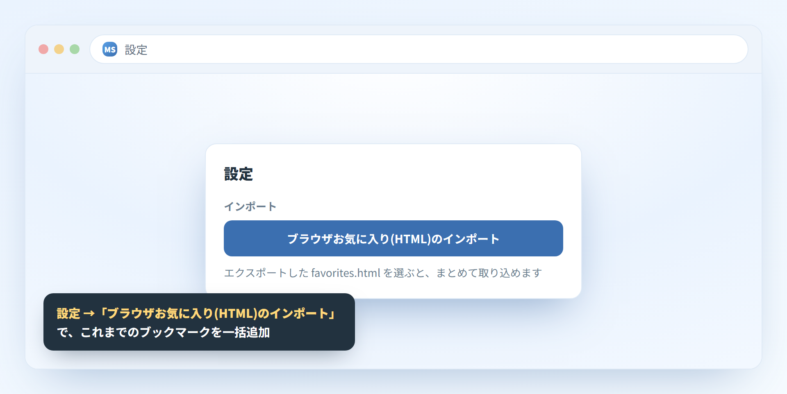

追加のしかたは、いろいろ。
使う場面に合わせて、いちばんラクな方法で。気づいたものを、その場でサッと。
-
1
開いているタブから追加
デスクトップの何もない所を右クリックし、「開いているタブから追加」へ。いま開いているタブの一覧から選ぶだけで置けます。

-
2
ブラウザの右クリックから送る
見ているページやリンクを右クリック →「My Shortcuts」→「デスクトップ N に送る」。アプリを開いていなくても追加できます。

-
3
お気に入りバーからドラッグ
ブラウザのお気に入りバーにあるブックマークを、そのままデスクトップへドラッグ＆ドロップ。

-
4
サイドバー・分割表示でドラッグ
サイドバー表示や分割表示のときは、もう一方の画面で見ているリンクを直接ドラッグして追加できます。

-
5
YouTube の動画を送る
YouTube の再生画面を右クリックすると「My Shortcuts に送る」が表示されます。動画はアプリ内のプレーヤーで、続きから再生できます。

-
6
Spotify の曲を送る
Spotify で曲・アルバム・プレイリストを右クリック →「My Shortcuts に送る」。アプリ内のプレーヤーで再生できます。

-
7
お気に入りをまとめてインポート
設定の「ブラウザお気に入り(HTML)のインポート」で、これまでのブックマークを一括で取り込めます。
